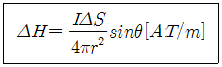
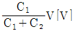
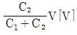
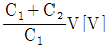
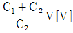
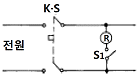
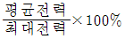
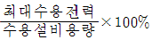
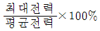
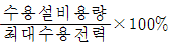

전기기능사 (2005-04-03 기출문제)
1과목: 전기 이론
1. 자체인덕턴스 0.2[H]의 코일에 전류가 0.01초 동안에 3[A]로 변하였을 때 이 코일에 유도되는 기전력[V]은?
- 70
- 60
- 50
- 40
(정답률: 82%)
2. 10[V/m]의 전장에 어떤 전하를 놓으면 0.1[N]의 힘이 작용한다. 전하의 양[C]은?
- 10-5
- 10-4
- 10-3
- 10-2
(정답률: 56%)

3. 100[V], 500[W]의 전열선 2개를 같은 전압에서 직렬로 접속한 경우는 병렬로 접속한 경우의 전력의 몇 배인가?
- 1/2배
- 1/4배
- 2배
- 4배
(정답률: 40%)
4. 10[Ω]의 저항에 2[A]의 전류가 흐를 때 저항의 단자전압은 얼마인가?
- 5[V]
- 10[V]
- 15[V]
- 20[V]
(정답률: 73%)
5. 동일한 저항을 병렬로 연결하였을 때 합성 저항은?
- 저항의 두 배
- 저항의 반
- 저항과 같다.
- 저항의 2/3
(정답률: 65%)
6. 유기 기전력은 다음의 어느 것에 관계 되는가?
- 시간에 비례한다.
- 쇄교 자속수의 변화에 비례한다.
- 쇄교 자속수에 반비례한다.
- 쇄교 자속수에 비례한다.
(정답률: 53%)
7. 다음 식은 전류에 의한 자기장의 세기에 관한 법칙을 설명한 것이다. 어떤 법칙인가?

- 렌쯔의 법칙
- 가우스의 법칙
- 스타인 메쯔의 실험식
- 비오-사바르의 법칙
(정답률: 80%)
8. 0.02[μF]의 콘덴서에 12[μC]의 전하를 공급하면 몇 [V]의 전위차를 나타내는가?
- 600
- 900
- 1200
- 2400
(정답률: 64%)
9. △-△ 평형 회로에서 E=200[V], 임피이던스 Z=3+j4[Ω]일 때 상전류 IP[A]는?
- 20[A]
- 200[A]
- 69.3[A]
- 40[A]
(정답률: 49%)
10. 역률이 70[%]인 부하에 전압 100[V]를 가해서 전류 5[A]가 흘렀다. 이 부하의 피상전력[VA]은?
- 250
- 350
- 357
- 500
(정답률: 36%)
11. 최대값 10(A)인 교류 전류의 평균값은 얼마인가?
- 6.37[A]
- 0.5[A]
- 0.2[A]
- 0.63[A]
(정답률: 71%)
12. 황산구리가 물에 녹아 양이온과 음이온으로 분리되는 현상을 무엇이라 하는가?
- 전리
- 분해
- 전해
- 석출
(정답률: 31%)
13. 열량을 표시하는 1칼로리[cal]는 몇 줄[J]인가?
- 0.4186[J]
- 4.186[J]
- 0.24[J]
- 1.24[J]
(정답률: 53%)
14. 애노드, 캐소드, 게이트의 3개의 전극을 갖고 있으며, 전원 전압의 위상 0°∼180°의 범위 안에서 위상제어에 사용되는 반도체는?
- 트랜지스터
- 다이오드
- SCR
- FET3
(정답률: 63%)
15. 자극의 세기 15[Wb], 길이 40[㎝]의 막대자석의 자기 모멘트는 얼마인가?
- 6[Wb·㎝]
- 6[Wb·m]
- 60[Wb·㎝]
- 60[Wb·m]
(정답률: 60%)
16. 다음 중 공기의 비투자율은 어느 것인가?
- 0.1
- 1
- 103
- 104
(정답률: 78%)
17. 히스테리시스 곡선에서 가로축과 만나는 점과 관계있는 것은?
- 기자력
- 잔류자기
- 자속밀도
- 보자력
(정답률: 71%)
18. 두 콘덴서 C1, C2를 직렬접속하고 양단에 V[V]의 전압을 가할 때 C1에 걸리는 전압은?




(정답률: 68%)
19. 합성수지관 상호 및 관과 박스와는 접속시에 삽입하는 깊이를 관 바깥지름의 몇 배 이상으로 하여야 하는가?
- 0.8
- 1.2
- 2.0
- 2.5
(정답률: 71%)
20. 연피 케이블을 접속할 때 반드시 사용하는 테이프는 다음 중 어느 것인가?
- 리노 테이프
- 면 테이프
- 자기 융착 테이프
- 비닐 테이프
(정답률: 75%)
2과목: 전기 기기
21. 금속관 공사에서 동일관내의 전선수가 4선일 때 전류감소 계수는?
- 0.43
- 0.49
- 0.56
- 0.63
(정답률: 27%)
22. 옥내배선에 많이 사용하는 전선으로 가요성이 크고 전기 저항이 작은 구리선은?
- 경동선
- 단선
- 연동선
- 강심 알루미늄선
(정답률: 54%)
23. 전주의 길이가 8[m]이고 근가의 길이가 1.0[m]일 때 U-볼트(경×길이)[㎜]의 표준은?
- 270×500
- 320×550
- 360×590
- 400×630
(정답률: 28%)
24. 전기기계 기구의 철대 및 금속제 외함에는 400[V] 이상일 경우 몇 종 접지공사를 하여야 하는가?
- 제 1종
- 제 2종
- 제 3종
- 특별 제 3종
(정답률: 66%)
25. 금속관의 호칭을 바르게 설명한 것은?
- 박강, 후강 모두 내경으로 [㎜]단위로 표시
- 박강, 후강 모두 외경으로 [㎜]단위로 표시
- 박강은 외경, 후강은 내경으로 [㎜]단위로 표시
- 박강은 내경, 후강은 외경으로 [㎜]단위로 표시
(정답률: 69%)
26. 저압 연접 인입선 시설에서 제한 사항이 아닌 것은?
- 인입선의 분기점에서 100[m]를 넘는 지역에 이르지 말 것
- 폭 5[m]를 넘는 도로를 횡단하지 말 것
- 다른 수용가의 옥내를 관통하지 말 것
- 지름 2.0[㎜]이하의 경동선을 사용하지 말 것
(정답률: 69%)
27. 전선의 접속 방법 중 트위스트 접속의 용도는?
- 2.6[㎜]이하 단선의 직선접속
- 3.2[㎜]이상 단선의 직선접속
- 3.5[㎟]이상 연선의 직선접속
- 5.5[㎟]이상 연선의 분기접속
(정답률: 75%)
28. 전선의 스리이브 접속에 있어서 펜치와 같이 사용되고 금속관 공사에서 로크 너트를 죌 때 사용하는 공구의 이름은?
- 펌프 플라이어(pump plier)
- 히키(hickey)
- 비트 익스텐션(bit extension)
- 클리퍼(clipper)
(정답률: 47%)
29. 결선도와 같이 경질 비닐관 공사를 할 때 배선기구를 붙여야 할 개소는? (단, 분기점은 박스기구를 붙이는 것으로 함)

- 3
- 4
- 5
- 6
(정답률: 40%)
30. 분수 등 물속에 시설하는 조명등용 용기 및 방호장치의 금속부분에 하는 접지공사는?
- 제 1종
- 특별 제 3종
- 제 2종
- 제 3종
(정답률: 52%)
31. 1.25[㎟] 코드선의 허용 전류로 옳은 것은? (단, 전선관에 넣지 않은 경우)
- 7
- 9
- 12
- 17
(정답률: 50%)
32. 네온 전선 중 7.5[㎸] N-RV전선의 명칭은 어느 것인가?
- 7.5[㎸], 고무절연 비닐시스 네온전선
- 7.5[㎸], 고무절연 클로로프렌시스 네온전선
- 7.5[㎸], 폴리에틸렌절연 비닐시스 네온전선
- 7.5[㎸], 비닐절연 네온전선
(정답률: 64%)
33. 전선로에서 애자가 구비하여야 하는 조건 중 잘못된 것은?
- 충분한 절연 내력을 가질 것
- 누설 전류가 적을 것
- 내구력이 작을 것
- 충분한 기계적 강도를 가질 것
(정답률: 76%)
34. 다음 중 접지의 목적과 관계없는 것은?
- 감전의 방지
- 전로의 대지전압 상승
- 보호 계전기의 동작확보
- 이상 전압의 억제
(정답률: 69%)
35. 열동계전기(THR)는 무엇이 동작하여 회로를 차단하는가?
- 퓨즈
- 다이오드
- 철심
- 바이메탈
(정답률: 41%)
36. 연선결정에 있어서 중심 소선을 뺀 층수가 4층이다. 전체 소선수는?
- 91
- 61
- 37
- 19
(정답률: 63%)
37. 공장이나 빌딩에서 400[V]배선을 하고 있는 이유로서 옳지 않은 것은?
- 전압 변동의 경감
- 전력손실의 경감
- 변압기 설비용량의 절감
- 전선재료의 절감
(정답률: 32%)
38. 공칭전압 3.3[kV]인 차단기의 정격전압은 몇[kV]인가?
- 3.6
- 3.3
- 3
- 4
(정답률: 46%)
39. 수용가의 인입구에서 분기하여 다른 지지물을 거치지 않고 다른 수용가의 인입구에 이르는 부분의 전선은?
- 가공전선
- 가공지선
- 가공인입선
- 연접인입선
(정답률: 65%)
40. 외선 공사를 할 때 심부름 로프를 주상에서 전주에 묶는 방법으로 가장 적절한 것은?
- 꼬리묶음
- 이중묶음
- 고리매기
- 풀림묶음
(정답률: 49%)
3과목: 전기 설비
41. 제 1종 접지공사에 사용하는 접지선의 최소 굵기는?(관련 규정 개정전 문제로 여기서는 기존 정답인 3번을 누르면 정답 처리됩니다. 자세한 내용은 해설을 참고하세요.)
- 1.6[mm]
- 2.0[mm]
- 2.6[mm]
- 5.0[mm]
(정답률: 50%)
42. 소맥분, 전분 기타 가연성의 분진이 존재하는 곳의 저압 옥내 배선 공사 방법 중 적당하지 않은 것은?
- 애자 사용 공사
- 합성수지관 공사
- 케이블 공사
- 금속관 공사
(정답률: 76%)
43. 전력수용가의 수용률은?




(정답률: 55%)
44. 중성점접지방식 중에서 지락전류가 최대인 접지방식은?
- 비접지식
- 소호코일접지식
- 고저항접지식
- 직접접지식
(정답률: 63%)
45. 동작전류가 흐르는 순간에 동작하여 2∼0.5Hz 정도의 고속도로 동작하는 계전기는?
- 반한시,정한시성계전기
- 정한시성계전기
- 순한시성계전기
- 반한시성계전기
(정답률: 52%)
46. 열사이클 중에서 가장 이상적인 열사이클은?
- 카르노사이클
- 랭킨사이클
- 재생사이클
- 재열사이클
(정답률: 36%)
47. 전주사이의 거리가 100m인 가공전선로가 있다. 전선 1m의 무게가 0.2kg 이고, 전선의 수평장력이 250kg 필요하다면, 전선의 이도는 몇 m 로 하여야 하는가? (단, 풍압, 온도 등의 영향은 없는 것으로 한다.)
- 0.8
- 1.0
- 1.2
- 1.4
(정답률: 28%)
48. 케이블의 고장점을 찾는데 사용되는 방법이 아닌 것은?
- 수색코일에 의한 방법
- 펄스측정법
- 머리 루프법
- 코올라우시브리지법
(정답률: 52%)
49. 신예 화력발전소에서 과열기 출구의 기압이 174㎏/㎠이다. 이것은 몇 기압(ata)에 해당하는가?
- 158.6
- 165.5
- 166.2
- 168.5
(정답률: 27%)
50. 60Hz, 20극의 수차 발전기가 전부하 운전 중 선로의 고장으로 차단기가 열리고 갑자기 무부하로 되었을 때 순간적으로 발생하는 최대속도는 몇 rpm 인가? (단, 이 수차 발전기의 속도 변동률은 25%이다.)
- 360
- 400
- 420
- 450
(정답률: 24%)
51. 기력발전소에서 연료를 완전 연소할 때 연도가스의 성분이 아닌 것은?
- CO2
- O2
- H2
- N2
(정답률: 36%)
52. 단상3선식 배전방식을 단상2선식과 비교할 때 가장 큰 단점은?
- 전압불평형이 생길 우려가 있다.
- 접지하기가 어렵다.
- 설비이용률이 나쁘다.
- 절연이 곤란하다.
(정답률: 50%)
53. 터빈에서 배기되는 증기를 용기 내부로 도입하여 물로 냉각시키면, 증기는 응결하고 용기 내부는 진공이 되므로 증기를 저압까지 팽창시킬 수 있다. 이렇게 하면 전체의 열낙차를 증가시키고, 증기터빈의 열효율을 높일 수 있는데 이러한 목적으로 사용되는 장치는?
- 복수기
- 조속기
- 탈기기
- 다이어프램
(정답률: 46%)
54. 중거리 송전선로(50∼100km)의 송전특성을 계산할 때 무시하여도 되는 요소는?
- 저항
- 인덕턴스
- 정전용량
- 누설컨덕턴스
(정답률: 44%)
55. 프란시스 수차의 주요 설비가 아닌 것은?
- 안내날개
- 차실
- 디플렉터
- 흡출관
(정답률: 40%)
56. 케이블의 도체에 교류가 흐르면 도체 주위에 생긴 자속 때문에 생기는 손실로서 케이블의 발열의 원인이 되는 것은?
- 유전체손
- 저항손
- 히스테리시스손
- 연피손
(정답률: 30%)
57. 배전선로의 전압강하를 조정하는 방법이 아닌 것은?
- 승압기 설치
- 변압기의 탭 조정
- 유도전압조정기 설치
- 밸런스 설치
(정답률: 46%)
58. 조상설비에 대한 설명으로 옳은 것은?
- 무효전력을 조정해서 전압의 조정과 전력손실을 경감시킨다.
- 유효전력을 조정해서 전류의 조정과 전력을 증가시킨다.
- 낙뢰와 차단기의 개폐 등에 의한 이상전압으로부터 기기를 보호한다.
- 주회로의 전압 및 전류에 비례한 저전압, 소전류로 변성시킨다.
(정답률: 36%)
59. 고압 배전선로의 선간전압을 3300V에서 5700V로 높이는 경우에 같은 배전선에서 배전전력이 같은 경우의 전력 손실은 몇 배로 줄일 수 있는가?
- 1/2
- 1/3
- 1/4
- 1/5
(정답률: 47%)
60. 수조의 역할이 아닌 것은?
- 토사의 침전 제거
- 수위의 이상상승 방지
- 공동현상의 완화
- 불순 부유물의 제거
(정답률: 47%)
0.1[N] = 10[V/m] * Q[C]
이를 Q에 대해 정리하면 다음과 같다.
Q[C] = 0.1[N] / 10[V/m] = 0.01[C]
따라서 정답은 "10-2"이다.